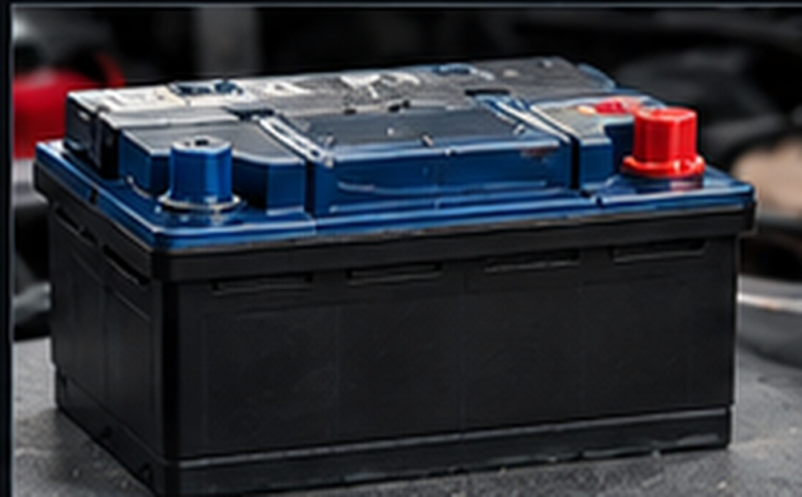
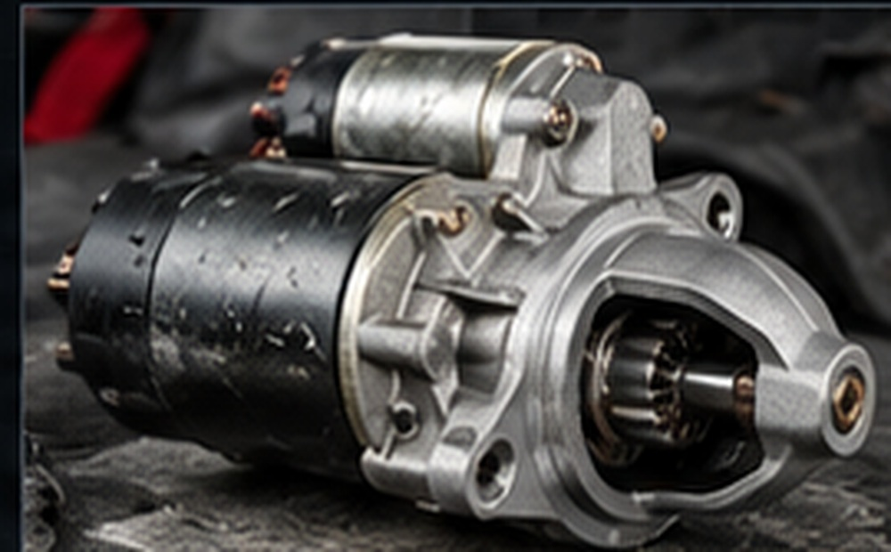
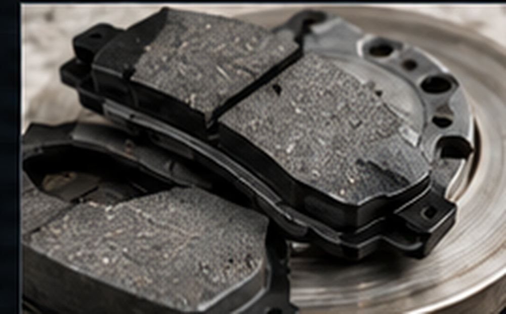
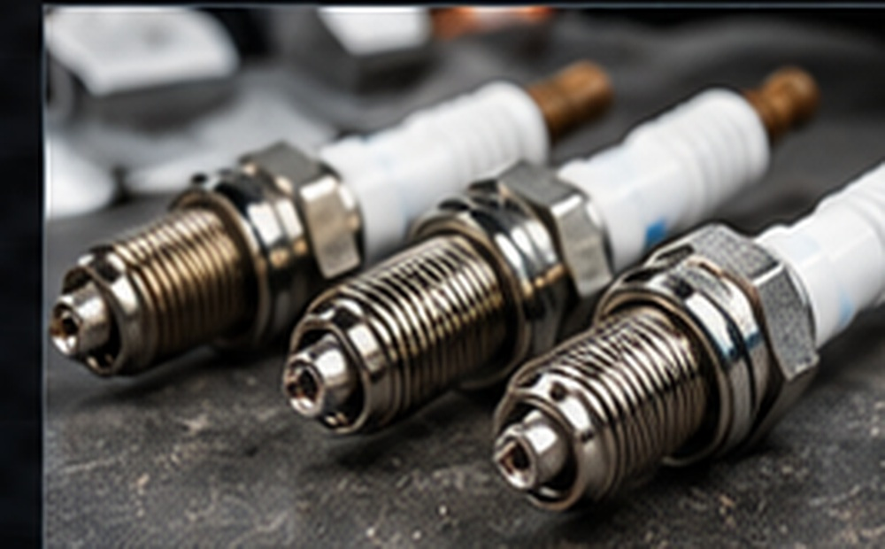
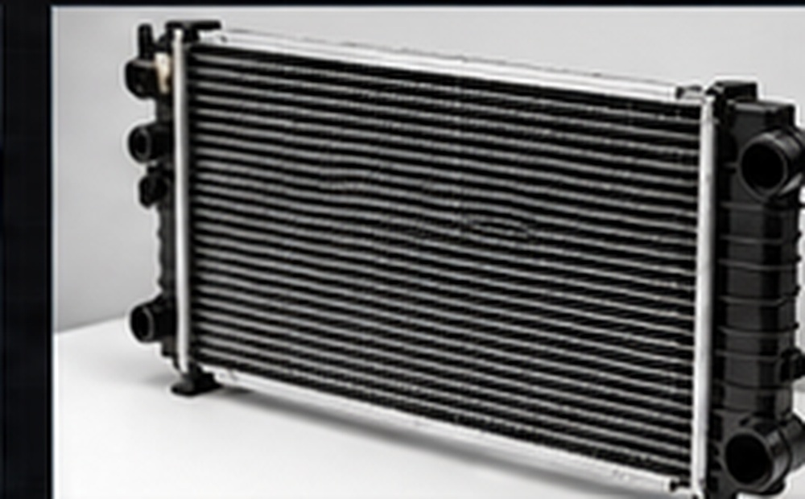
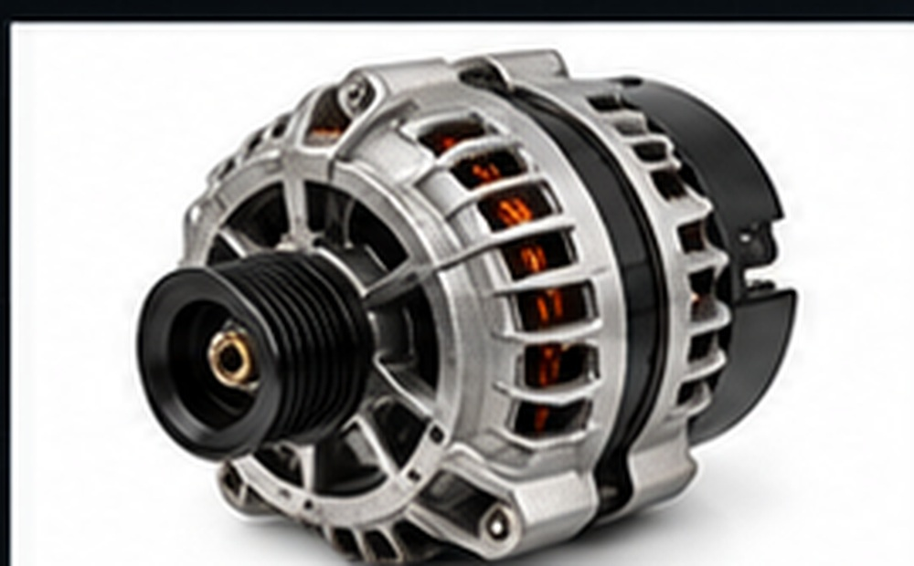
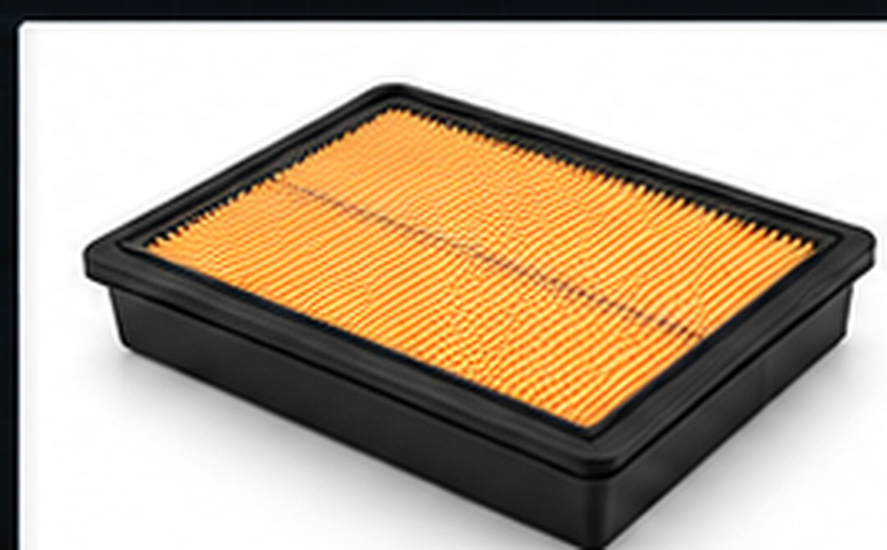
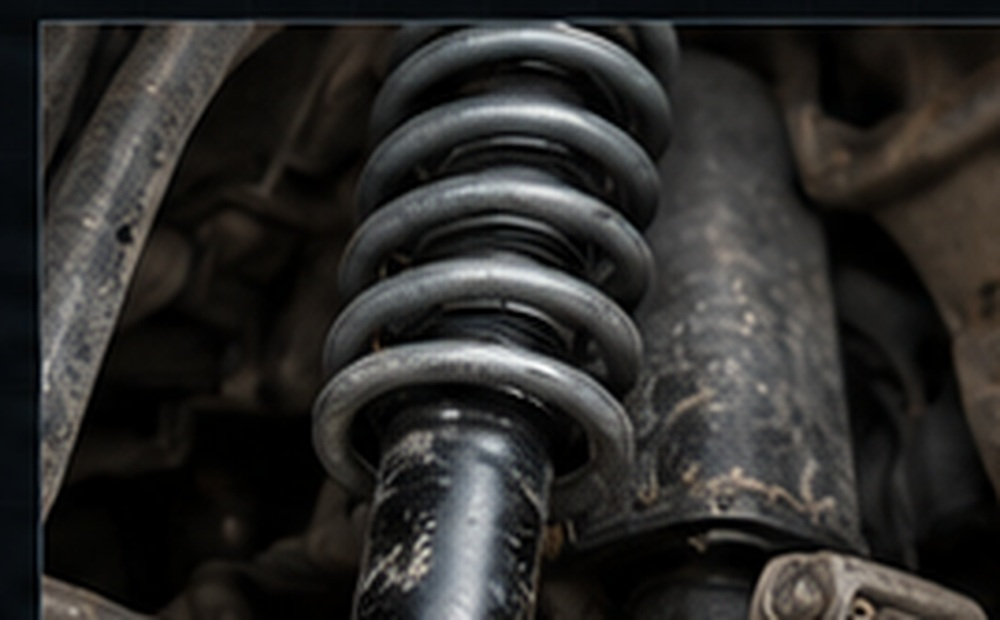
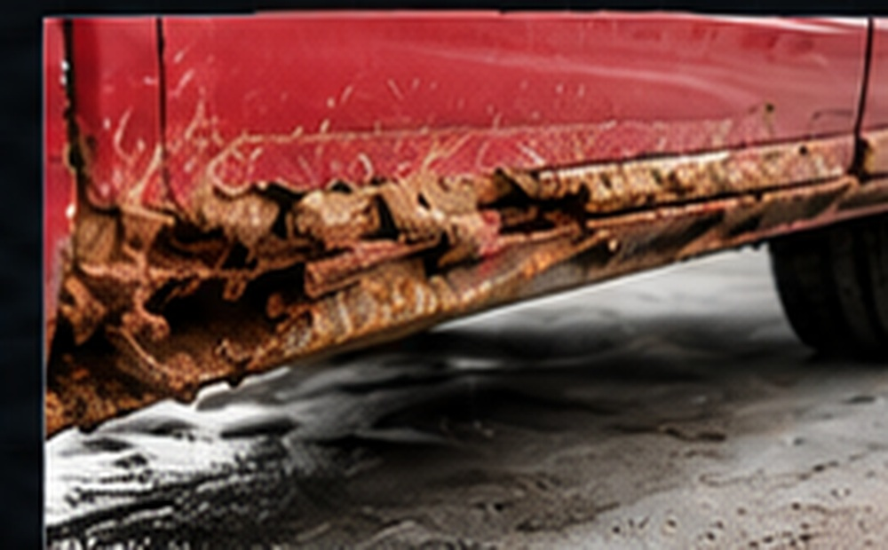

Аккумулятор не держит зарядАккумулятор и цепь зарядки
Электрика
Аккумулятор не держит заряд
Быстро разряжается, двигатель плохо запускается или падает напряжение.
Типичные проблемы автомобилей ВАЗ: симптомы, вероятные причины и способы устранения.

Быстро разряжается, двигатель плохо запускается или падает напряжение.


Скрип, скрежет, снижение эффективности торможения или увеличенный ход педали.

Двигатель троит, работает нестабильно на холостом ходу или плохо запускается.

Температура выше нормы, есть утечка антифриза или плохо работает охлаждение.

Горит лампа АКБ, напряжение низкое, аккумулятор разряжается во время поездки.

Падает тяга, может увеличиваться расход топлива, фильтр сильно загрязнён.



Обороты растут, а машина разгоняется слабо; передачи включаются хуже обычного.
Выбор сохранится в браузере.
Сохраняйте неисправности и руководства кнопкой ♡.